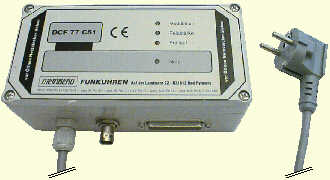
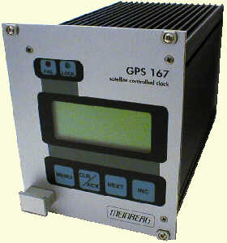

Generic Reference Driver
Synopsis
Address: 127.127.8.u
Reference ID: PARSE
Driver ID: GENERIC
Serial Port: /dev/refclock-u; TTY mode according to clock type
Description
The PARSE driver supports 17 different clockes types/configurations. PARSE is actually a multi clock driver.
The actual receiver status is mapped into various synchronization states generally used by receivers. The driver is configured to interpret the time codes of DCF C51, PZF535, PZF509, GPS16x, Trimble SV6 GPS, ELV DCF7000, Schmid, Wharton 400A and low cost receivers (see list below).
The reference clock support in ntp contains the necessary configuration tables for those receivers. In addition to supporting several different clock types and 4 devices, the generation a a PPS signal is also provided as an configuration option. The PPS configuration option uses the receiver generated time stamps for feeding the PPS loopfilter control for much finer clock synchronization.
CAUTION: The PPS configuration option is different from the hardware PPS signal, which is also supported (see below), as it controls the way ntpd is synchronized to the reference clock, while the hardware PPS signal controls the way time offsets are determined.
The use of the PPS option requires receivers with an accuracy of better than 1ms.
ntpq (8)
timecode variable
The ntpq program can read clock variables command list several variables. These hold the following information: refclock_time is the local time with the offset to UTC (format HHMM). The currently active receiver flags are listed in refclock_status. Additional feature flags of the receiver are optionally listed in parentheses. The actual time code is listed in timecode. A qualification of the decoded time code format is following in refclock_format. The last piece of information is the overall running time and the accumulated times for the clock event states in refclock_states. When PPS information is present additional variable are available. refclock_ppstime lists then the PPS timestamp and refclock_ppsskew lists the difference between RS232 derived timestamp and the PPS timestamp.
Currently, eighteen clock types (devices /dev/refclock-0 - /dev/refclock-3) are supported by the PARSE driver.
A note on the implementations:
The pictures below refer to the respective clock and where taken from the vendors web pages. They are linked to the respective vendors.
- server 127.127.8.0-3 mode 0
Meinberg PZF535/PZF509 receiver (FM demodulation/TCXO / 50us)
- server 127.127.8.0-3 mode 1
Meinberg PZF535/PZF509 receiver (FM demodulation/OCXO / 50us)

- server 127.127.8.0-3 mode 2
Meinberg DCF U/A 31/DCF C51 receiver (AM demodulation / 4ms)

- server 127.127.8.0-3 mode 3
ELV DCF7000 (sloppy AM demodulation / 50ms)
- server 127.127.8.0-3 mode 4
Walter Schmid DCF receiver Kit (AM demodulation / 1ms)
- server 127.127.8.0-3 mode 5
RAW DCF77 100/200ms pulses (Conrad DCF77 receiver module / 5ms)
- server 127.127.8.0-3 mode 6
RAW DCF77 100/200ms pulses (TimeBrick DCF77 receiver module / 5ms)
- server 127.127.8.0-3 mode 7
Meinberg GPS166/GPS167 receiver (GPS / <<1us)

- server 127.127.8.0-3 mode 8
IGEL clock

- server 127.127.8.0-3 mode 9
Trimble SVeeSix GPS receiverTAIP protocol (GPS / <<1us)
- server 127.127.8.0-3 mode 10
Trimble SVeeSix GPS receiver TSIP protocol (GPS / <<1us) (no kernel support yet)


- server 127.127.8.0-3 mode 11
Radiocode Clocks Ltd RCC 8000 Intelligent Off-Air Master Clock support
- server 127.127.8.0-3 mode 12
HOPF Funkuhr 6021

- server 127.127.8.0-3 mode 13
Diem's Computime Radio Clock
- server 127.127.8.0-3 mode 14
RAWDCF receiver (DTR=high/RTS=low)
- server 127.127.8.0-3 mode 15
WHARTON 400A Series Clocks with a 404.2 Serial Interface
- server 127.127.8.0-3 mode 16
RAWDCF receiver (DTR=low/RTS=high)
- server 127.127.8.0-3 mode 17
VARITEXT Receiver (MSF)
Actual data formats and set-up requirements of the various clocks can be found in NTP PARSE clock data formats.
The reference clock support carefully monitors the state transitions of the receiver. All state changes and exceptional events such as loss of time code transmission are logged via the syslog facility. Every hour a summary of the accumulated times for the clock states is listed via syslog.
PPS support is only available when the receiver is completely synchronized. The receiver is believed to deliver correct time for an additional period of time after losing synchronizations, unless a disruption in time code transmission is detected (possible power loss). The trust period is dependent on the receiver oscillator and thus a function of clock type. This is one of the parameters in the clockinfo field of the reference clock implementation. This parameter cannot be configured by ntpdc.
For the Meinberg GPS166/GPS167 receiver is also a special firmware release available (Uni-Erlangen). This release should be used for proper operation.
The raw DCF77 pulses can be fed via a level converter directly into Pin 3 (Rx) of the Sun. The telegrams will be decoded an used for synchronization. AM DCF77 receivers are running as low as $25. The accuracy is dependent on the receiver and is somewhere between 2ms (expensive) to 10ms (cheap). Upon bad signal reception of DCF77 synchronizations will cease as no backup oscillator is available as usually found in other reference clock receivers. So it is important to have a good place for the DCF77 antenna. For transmitter shutdowns you are out of luck unless you have other NTP servers with alternate time sources available.
In addition to the PPS loopfilter control a true PPS hardware signal can be utilized via the PPSAPI interface. PPS pulses are usually applied via the CD pin (8) on serial devices. To select PPS support the mode parameter ist the mode value of above plus 128. If 128 is not added to the mode value PPS will be detected to be available but it will not be used.
Hardware PPS support
For PPS to be used you MUST add 128 to the mode parameter.
Monitor Data
Clock states statistics are written hourly the the syslog service. Online information can be found by examining the clock variable via the ntpq cv command.
Some devices have quite extensive addtional information (GPS16x, Trimble). The driver reads out much of the internal GPS data
and makes it accessible via clock variables. To find out about additional variable names query for the clock_var_list variable on
a specific clock association like this:
ntpq> as
ind assID status conf reach auth condition last_event cnt
===========================================================
1 19556 9154 yes yes none falsetick reachable 5
2 19557 9435 yes yes none candidat clock expt 3
3 19558 9714 yes yes none pps.peer reachable 1
ntpq> raw
Output set to raw
ntpq> cv 19557 clock_var_list
clock_var_list="type,timecode,poll,noreply,badformat,baddata,fudgetime1,fudgetime2,stratum,refid,flags,device,clock_var_list,refclock_ppsskew,refclock_ppstime,refclock_time,refclock_status,refclock_format,refclock_states,refclock_id,refclock_iomode,refclock_driver_version,meinberg_gps_status,gps_utc_correction,gps_message,meinberg_antenna_status,gps_tot_51,gps_tot_63,gps_t0a,gps_cfg[1],gps_health[1],gps_cfg[2],gps_health[2],gps_cfg[3],gps_health[3],gps_cfg[4]"
ntpq> cv 19557 refclock_status,refclock_format,refclock_states,refclock_id,refclock_iomode,refclock_driver_version,meinberg_gps_status,gps_utc_correction,gps_message,meinberg_antenna_status,gps_tot_51,gps_tot_63,gps_t0a,gps_cfg[1],gps_health[1],gps_cfg[2],gps_health[2],gps_cfg[3],gps_health[3],gps_cfg[4],gps_cfg[5],gps_health[6],gps_cfg[6],gps_health[7],gps_cfg[7],gps_health[8],gps_cfg[8],gps_health[9],gps_cfg[9],gps_health[9]
status=0x0003,
refclock_status="UTC DISPLAY; TIME CODE; PPS; POSITION; (LEAP INDICATION; PPS SIGNAL; POSITION)",
refclock_format="Meinberg GPS Extended",
refclock_states="*NOMINAL: 21:21:36 (99.99%); FAULT: 00:00:03 (0.00%); running time: 21:21:39",
refclock_id="GPS", refclock_iomode="normal",
refclock_driver_version="4.11",
meinberg_gps_status="[0x0000] <OK>",
gps_utc_correction="current correction 13 sec, last correction on c3710e80.00000000 Fri, Nov 28 2003 0:00:00.000",
gps_message="ZIGMER3TN7R9U44:6WWDEK",
meinberg_antenna_status="RECONNECTED on 2004-10-29 20:40:03.0000000 (+0000) UTC CORR, LOCAL TIME, reconnect clockoffset +0.0000000 s, disconnect time 0000-00-00 00:00:00.0000000 (+0000) ",
gps_tot_51="week 1295 + 0 days + 47250.0000000 sec",
gps_tot_63="week 1295 + 0 days + 47244.0000000 sec",
gps_t0a="week 1295 + 2 days + 60672.0000000 sec",
gps_cfg[1]="[0x9] BLOCK II", gps_health[1]="[0x0] OK;SIGNAL OK",
gps_cfg[2]="[0x0] BLOCK I", gps_health[2]="[0x3f] PARITY;MULTIPLE ERRS",
gps_cfg[3]="[0x9] BLOCK II", gps_health[3]="[0x0] OK;SIGNAL OK",
gps_cfg[4]="[0x9] BLOCK II", gps_cfg[5]="[0x9] BLOCK II",
gps_cfg[6]="[0x9] BLOCK II", gps_health[6]="[0x0] OK;SIGNAL OK",
gps_cfg[7]="[0x9] BLOCK II", gps_health[7]="[0x0] OK;SIGNAL OK",
gps_cfg[8]="[0x9] BLOCK II", gps_health[8]="[0x0] OK;SIGNAL OK",
gps_cfg[9]="[0x9] BLOCK II", gps_health[9]="[0x0] OK;SIGNAL OK"
ntpq>
Currently raw output is need because of display limitations in ntpq/ntpd - so large lists need
to by retrieved in several queries.
Fudge Factors
- time1 time
- Specifies the time offset calibration factor, in seconds and fraction, with default depending on clock type.
- time2 time
-
If flag1 is 1 time2 specifies the offset if the PPS signal to the actual time (PPS fine tuning).
-
If flag1 is 1 time2 specifies the seconds a receiver with a premium local oscillator can be trusted after loosing synchronisation.
- stratum stratum
- Stratum for this reference clock.
- refid refid
- refid for this clock
- flag1 0 | 1
- when 0 fudge timeval2 value will refer to the PPS offset. when 1 timeval2 values will refer to the TRUST TIME.
- flag2 0 | 1
- sample PPS on CLEAR instead on ASSERT if flag2 is 1
- flag3 0 | 1
- link kernel PPS tracking to this refclock instance if flag3 is 1
- flag4 0 | 1
- Delete next leap second instead of adding it. (You'll need to wait a bit for that to happen 8-)
Note about auxiliary SUN STREAMS modules (SunOS and Solaris):
- The timecode of these receivers used to be sampled via a STREAMS module in the kernel (The STREAMS module has been designed for use with SUN Systems under SunOS 4.1.x or Solaris 2.3 - 2.8. It can be linked directly into the kernel or loaded via the loadable driver mechanism). This STREAMS module can be adapted to be able to convert different time code formats. Today the PPSAPI mechanism can be used. There is no real need for the STREAMS modules any more.
Making your own PARSE clocks
The parse clock mechanismis deviated from the way other ntp reference clocks work. For a short description how to build parse reference clocks see making PARSE clocks
Additional Information
Reference Clock Drivers